Jordan Holiday Jacquard Knit · Style JM-H26-001 · Self-initiated
A full development package for a knit-in jacquard sweater, built so a vendor has what they need to quote, sample and produce it. The page is structured like a working tech pack, with click-through graded measurements.
Brief
Streetwear and lifestyle concept translated into a 12-gauge jacquard knit.
Artwork
Knit-in motif drawn as flat vector, with matched pattern bands A to F.
Specs
Materials, construction rules, trims, graded measurements S to 3XL.
Handoff
Knit and QC spec, packaging, BOM and approval gates for the vendor.
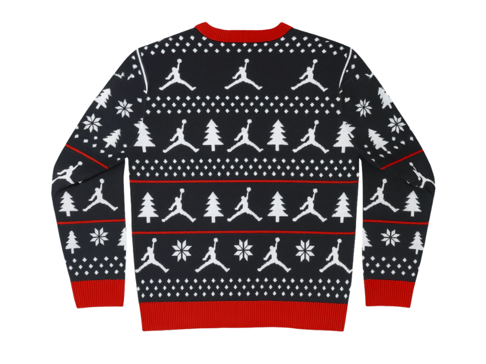
WHAT A VENDOR GETS
Flats and schematics with pattern bands and rib trim called out
Three colorways with Pantone references
Trim callouts: main label, neck tape, care label, hang tag, size label, UPC
13 points of measure graded S to 3XL, inches and cm
BOM and approval gates so changes are tracked to sign-off
INDUSTRY · Allover print and graphics capsule · Self-initiated concept
Four original prints drawn from things already in a restaurant: type, paperwork, line and stain. Each is built as a production repeat, with a clear rule for how it scales, what technique prints it, and where it goes on the garment.
Brief
Staff apparel for hospitality workers, sold in volume to restaurant groups.
Artwork
Hand-drawn source rebuilt as clean, seamless repeat tiles.
Specs
Scale, technique and application set per print, per garment.
Handoff
One print engine, with season two built as a recolor.
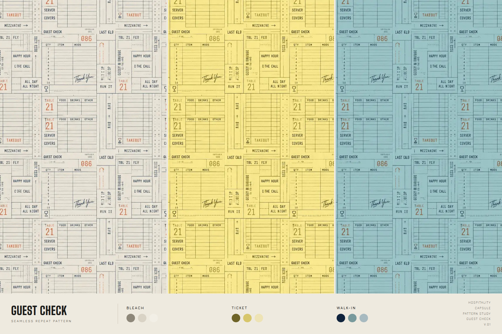
Guest Check · seamless repeat · 3 colorways
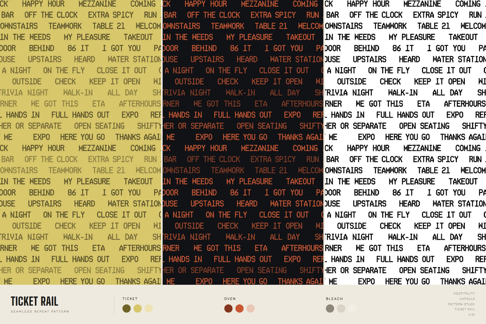
Ticket Rail · continuous feed, placed on the garment
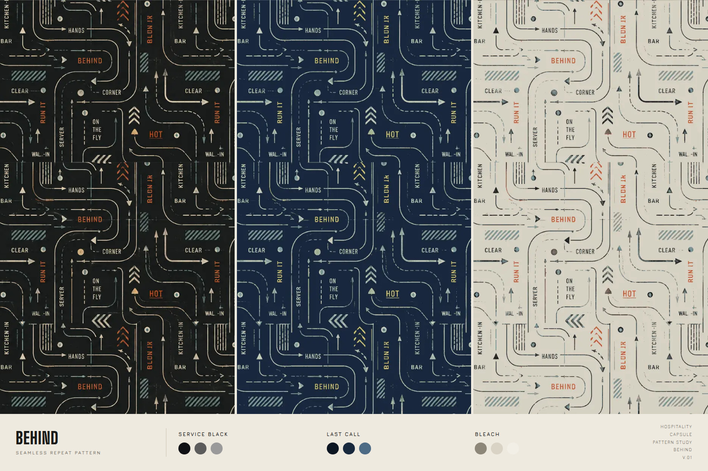
Behind · floor path system · three-color line print
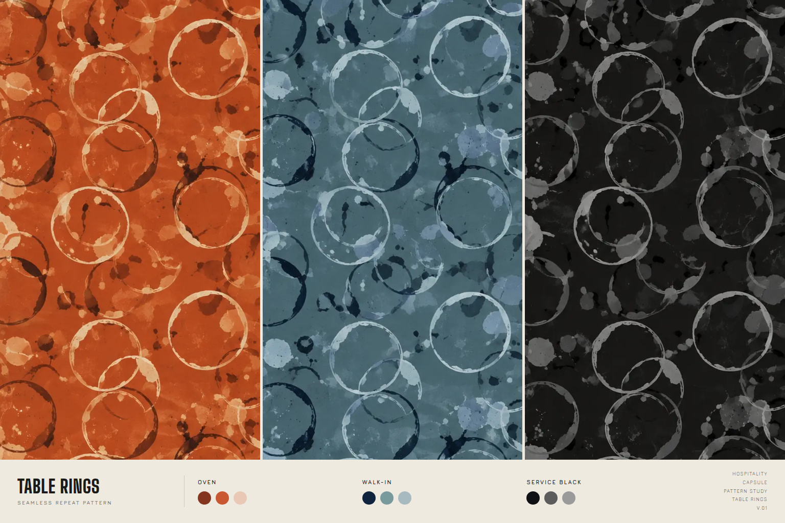
Table Rings · large scale, placed sublimation
HOW EACH PRINT IS BUILT
Ticket Rail: built from a text file, so a restaurant group's own language can drop in easily
Guest Check: seamless grid that recolors and rescales using the same artwork
Behind: three-color line print at mid scale
Table Rings: large scale, engineered so no two pieces crop the same
GRAPHIC HITS
INDUSTRY: wordmark, made to stay clear small, woven or embroidered
86: chest hit, hem tag or sock cuff
ALL DAY: repeat band along a short hem
HEARD: front and center on a hat, tee or apron
03
APPAREL LINE ART + LAY DOWNS
Placement on tees, aprons and headwear · Jordan sweater flat + INDUSTRY
Every print is sized and placed per garment so the repeat reads correctly on the body. Below: the same system on tees, aprons and headwear, where the pocket, strap and crown change how the art has to sit.
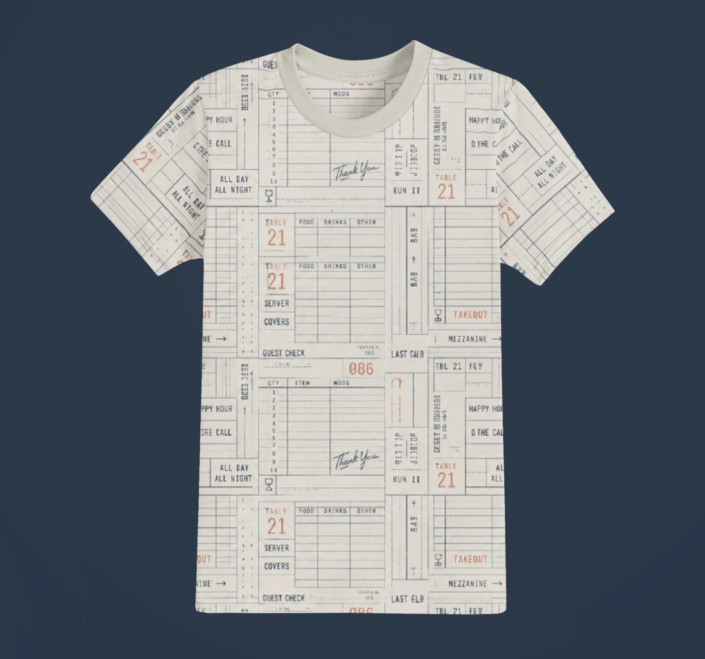
Tee · Guest Check · allover
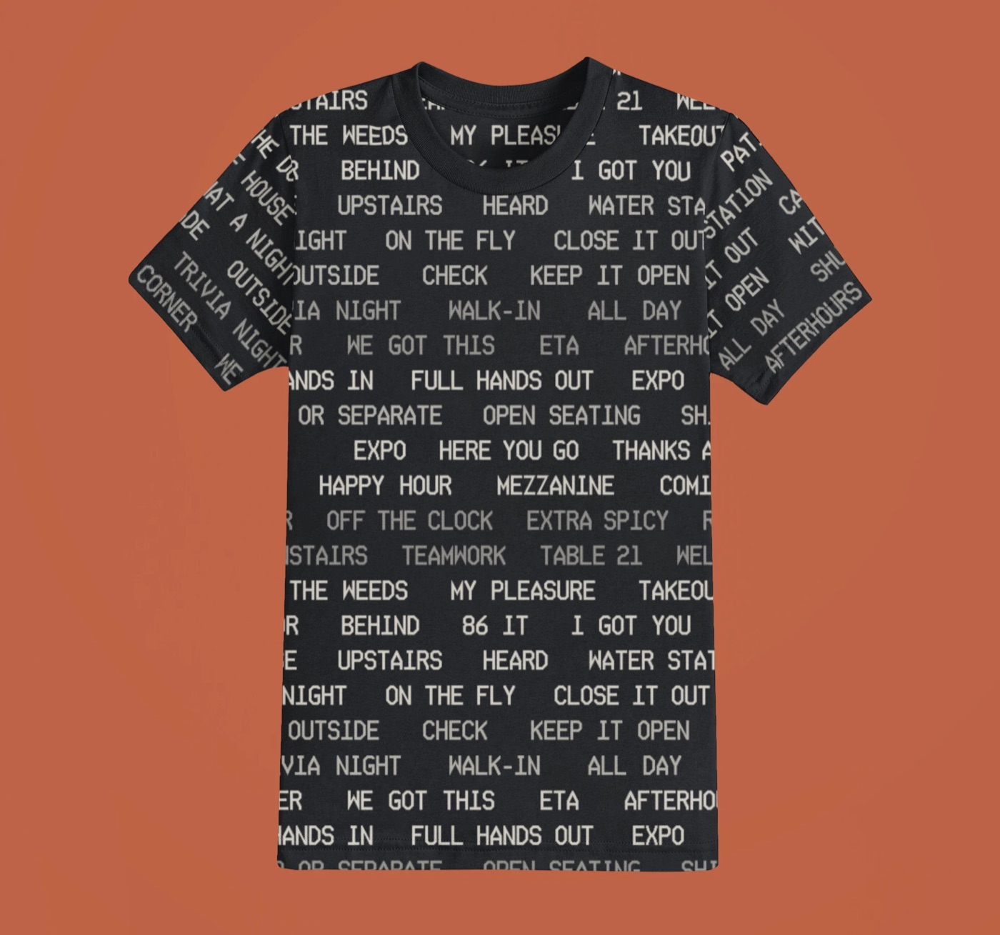
Tee · Ticket Rail · placed
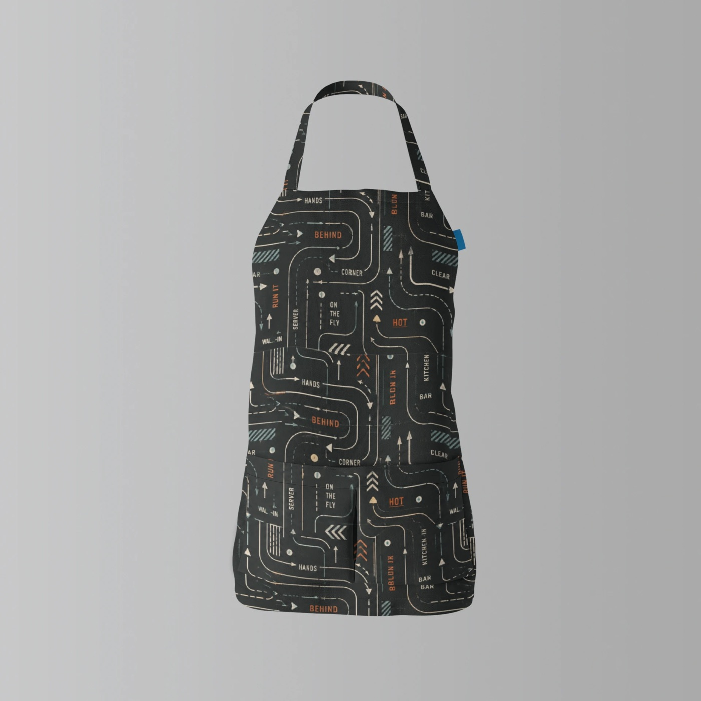
Apron · Behind · pocket match
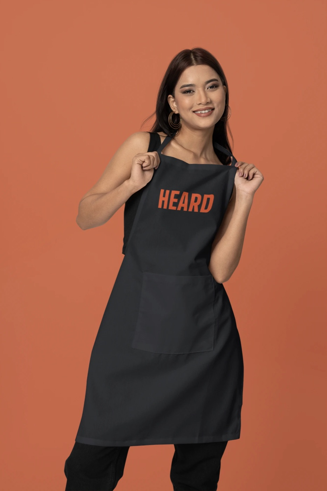
Apron · HEARD · chest hit
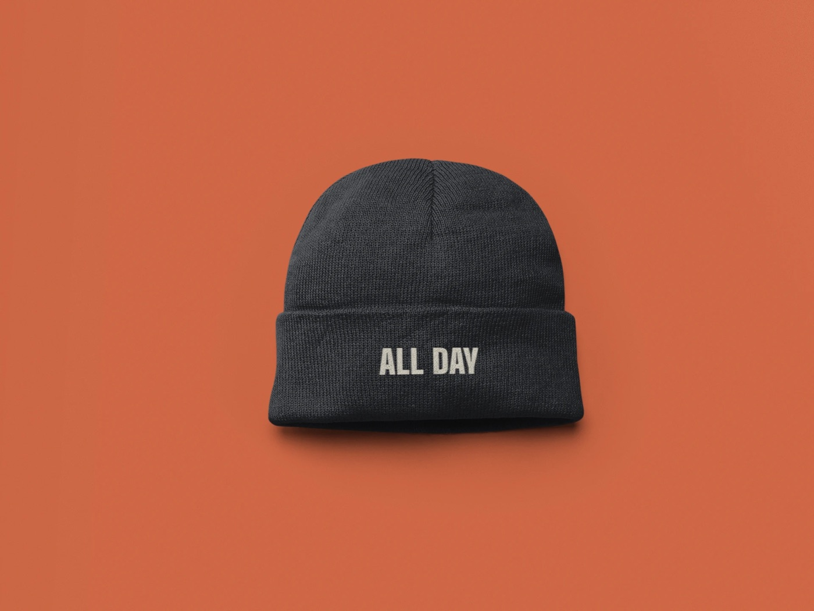
Beanie · ALL DAY · embroidery
BASKETBALL APPLICATION: THE 86 JERSEY
Why 86: kitchen shorthand for out of stock, and the number on the jersey
Front: 86 centered with INDUSTRY wordmark above, Bleach on Service Black with an Oven outline
Back: INDUSTRY nameplate over an oversized 86
Trim: Oven neck and armhole binding, Bleach side panel stripe, Oven hem band
PRODUCTION NOTES (CONCEPT)
Numerals: built as a two-color vector, ready for heat transfer or screen print
Colors: three flat colors with simple separations
Wordmark: one size for front and back, clear at small scale
LAY DOWN NOTES
Allover (AOP): repeat tiles scaled to the body, with sleeves rotated so type stays readable
Placed: Ticket Rail and graphic hits are positioned individually
Pocket and strap: pattern breaks aligned so seams land cleanly
Headwear: crown, cuff and panel placement per hat style
FLAT LINE ART
Jordan sweater flat: vector line art with bands and trim shown, used in the tech pack
Construction clarity: seams, rib and trim drawn so the vendor can read it
Hospitality is hard on color: heat, bleach, grease, sweat and forty washes a season. The INDUSTRY palette is designed around that, so wear becomes part of the range. The Jordan sweater carries a tighter three-yarn story.
Service Black#101114
Bleach#D8D3C4
Ticket#D8C66B
Walk-In#789A9D
Oven#C95732
Last Call#18283D
BlackPANTONE 19-4005 TCX · #15151A
WhitePANTONE 11-0601 TCX · #F0F0F0
Gym RedPANTONE 19-1763 TCX · #C8102E
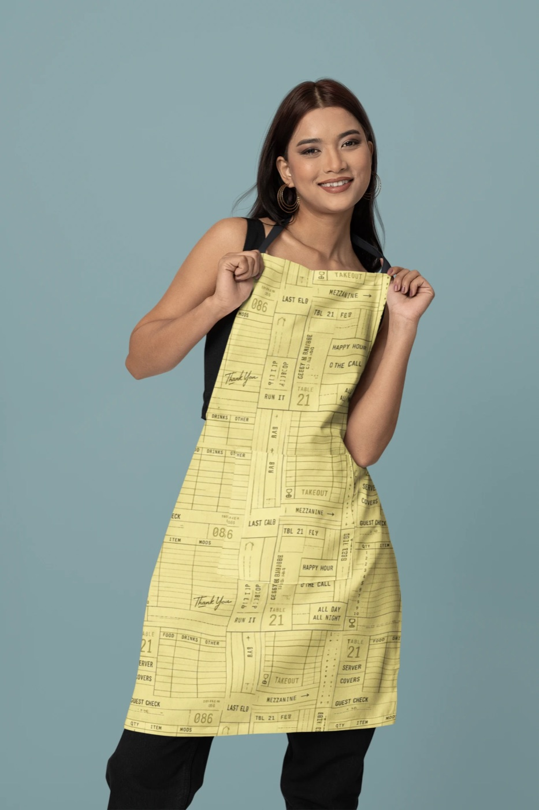
Guest Check · Ticket colorwayTicket Rail · Service Black
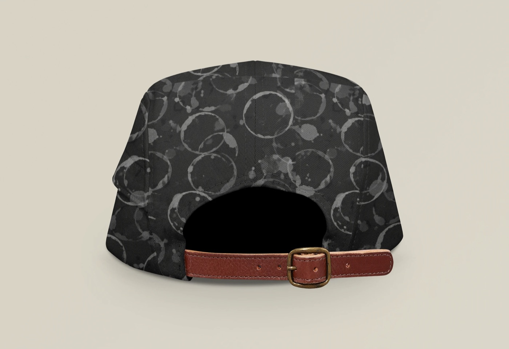
Table Rings · tonal on black
HOW THE COLOR WORKS
Grounds: Service Black for everything, because the floor already chose it
Broken color: cold neutrals and mid-tones hide what a long shift leaves behind
One hit: Ticket yellow and Oven as small accents pulled from service
Jordan Holiday Knit and INDUSTRY are self-initiated concept projects. INDUSTRY is not affiliated with, endorsed by, or produced for any brand. All artwork is original, and every garment shown is a concept visualization. Prepared for the Production Artist II, Basketball Apparel Graphics role.